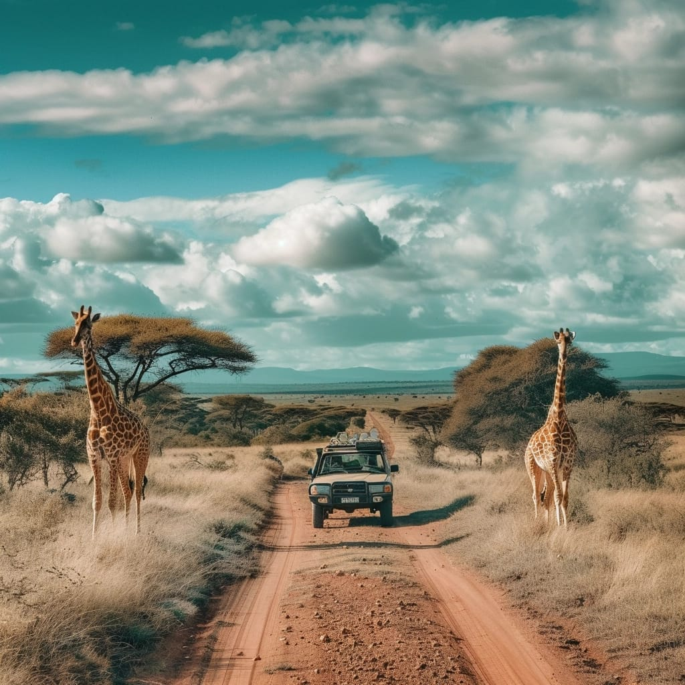

- Bali, Indonesia:
Conocida por sus playas exóticas, templos antiguos y paisajes de
selva, Bali es un destino ideal para aquellos que buscan aventuras tropicales, así
como experiencias culturales y espirituales.
- París, Francia:
La "Ciudad de la Luz" es un destino emblemático para los amantes del
arte, la historia y la gastronomía. Con monumentos icónicos como la Torre Eiffel y el
Louvre, París atrae a viajeros de todo el mundo.
- Safari en el Serengeti, Tanzania:
Para aquellos que buscan experiencias de safari inolvidables, el Serengeti ofrece
la oportunidad de ver la migración anual de millones de animales, incluyendo cebras,
ñus y leones.
 - Nueva York, Estados Unidos:
La ciudad que nunca duerme es un destino cosmopolita
que ofrece una vibrante escena cultural, una gran variedad de restaurantes y tiendas
de clase mundial, así como una impresionante arquitectura y paisajes urbanos.
- Tokio, Japón:
Con su combinación única de tradición y modernidad, Tokio ofrece a los viajeros una
visión fascinante de la cultura japonesa. Desde los templos antiguos hasta los barrios
de moda y la tecnología de vanguardia, Tokio tiene algo para todos.
- Machu Picchu, Perú:
Este antiguo sitio arqueológico es uno de los destinos más
emblemáticos de Sudamérica. Rodeado de montañas y selva, Machu Picchu ofrece
vistas impresionantes y una rica historia incaica.